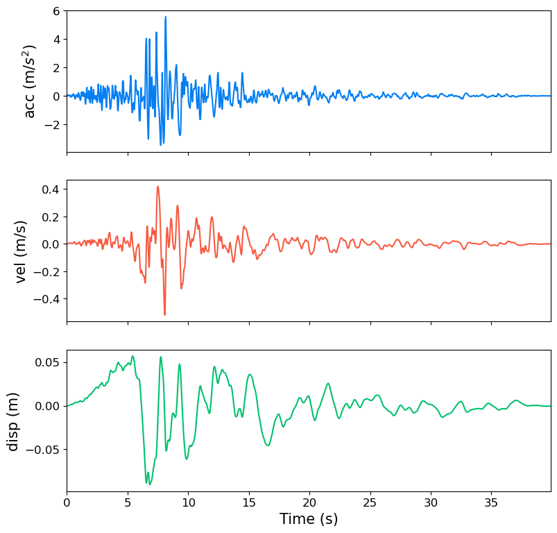

A quick introduction
[1]:
import gmspy as gm
import matplotlib.pyplot as plt
import numpy as np
from scipy.integrate import cumulative_trapezoid
Load Examples
[2]:
ts, acc = gm.load_gm_examples("Kobe")
dt = ts[1] - ts[0]
Preprocessing
Baseline Correction
[3]:
acc_corr, vel_corr, disp_corr = gm.baselinecorr(ts, acc, poly_degree=1, plot=True)

Filtering
[4]:
ts, acc = gm.load_gm_examples("ChiChi")
dt = ts[1] - ts[0]
acc2 = gm.freq_filt(
dt,
acc,
ftype="Butterworth", # 'Butterworth', 'Chebyshev', 'Bessel'
btype="lowpass", # 'lowpass', 'highpass', 'bandpass', 'bandstop'
order=4,
freq1=9,
freq2=20,
rp=3,
plot=True,
)

Resampling
[5]:
ts, acc = gm.load_gm_examples("Imperial_Valley")
dt = ts[1] - ts[0]
dtis = [dt / 2, 2 * dt]
colors = ["b", "r"]
fig, ax = plt.subplots(figsize=(9, 4))
ax.hlines(0, np.min(ts), np.max(ts), lw=0.5, colors="gray")
ax.plot(ts, acc, c="gray", lw=1, label=f"origin, dt={dt}, num={len(ts)}", alpha=1)
for i, dti in enumerate(dtis):
ts2, acc2 = gm.resample(dt, acc, dti)
ax.plot(ts2, acc2, c=colors[i], lw=1, alpha=1, label=f"dti={dti}, num={len(ts2)}")
ax.set_xlim(np.min(ts), np.max(ts))
ax.grid(False)
ax.set_ylabel("acceleration", fontsize=12)
ax.tick_params(labelsize=12)
ax.legend(fontsize=12)
plt.show()

Linear Dynamic Time-History Analysis of SDOF System
[6]:
ts, acc = gm.load_gm_examples("Kocaeli")
dt = ts[1] - ts[0]
T = 1
omega = np.pi * 2 / T
u, v, d = gm.lida(dt, acc, omega=omega, damp_ratio=0.05, plot=True)

SeismoGM —Solving IMs, response spectra, etc.
[7]:
ts, acc = gm.load_gm_examples("Northridge")
dt = ts[1] - ts[0]
Instantiate the class where the arg unit is used to tell the program which unit your acceleration record is in.
Default: acc:g, vel=cm, disp=cm.
[8]:
GM = gm.SeismoGM(dt=dt, acc=acc, unit="g")
GM.plot_hist()

You can also reset the units
Note
This will change the units of all time-histories, including acceleration. Subsequent IMs are computed in the latest units.
[9]:
GM.set_units(acc="m", vel="m", disp="m")
GM.plot_hist()
acc-unit: m/s2; vel-unit；m/s; disp-unit: m

Get IMs independent of response spectra
[10]:
ims = GM.get_ims(display_results=True)
┏━━━━━━━━━━━┳━━━━━━━━┳━━━━━━━━━━━━━━━━━━━━━━┳━━━━━━━━━━━━━━━━━━━━━━━━━━━━━━━━━━━━━━━━━━━━━━━━┓ ┃ IM ┃ Value ┃ Unit ┃ Name ┃ ┡━━━━━━━━━━━╇━━━━━━━━╇━━━━━━━━━━━━━━━━━━━━━━╇━━━━━━━━━━━━━━━━━━━━━━━━━━━━━━━━━━━━━━━━━━━━━━━━┩ │ PGA │ 5.575 │ m/s2 │ Peak ground acceleration │ │ PGV │ 0.518 │ m/s │ Peak ground velocity │ │ PGD │ 0.091 │ m │ Peak ground displacement │ │ V_A │ 0.093 │ s │ PGV/PGA │ │ D_V │ 0.175 │ s │ PGD/PGV │ │ EDA │ 5.667 │ m/s2 │ Effective Design Acceleration │ │ Ia │ 2.732 │ m/s │ Arias Intensity │ │ Ima │ 0.094 │ m/s │ Modified Arias Intensity │ │ MIV │ 0.640 │ m/s │ Maximum Incremental Velocity │ │ Arms │ 0.654 │ m/s2 │ Root-mean-square of acceleration │ │ Vrms │ 0.073 │ m/s │ Root-mean-square of velocity │ │ Drms │ 0.024 │ m │ Root-mean-square of displacement │ │ Pa │ 1.694 │ (m/s2)^2 │ Housner earthquake power index of acceleration │ │ Pv │ 0.020 │ (m/s)^2 │ Housner earthquake power index of velocity │ │ Pd │ 0.002 │ (m)^2 │ Housner earthquake power index of displacement │ │ Ra │ 11.627 │ m/s2*s^(1/3) │ Riddell index of acceleration │ │ Rv │ 1.346 │ (m/s)^(2/3)*s^(1/3) │ Riddell index of velocity │ │ Rd │ 0.189 │ m*s^(1/3) │ Riddell index of displacement │ │ SED │ 0.211 │ m2/s │ Specific Energy Density │ │ If │ 0.900 │ (m/s)*s^(1/4) │ Fajfar index │ │ Ic │ 3.341 │ (m/s2)^(2/3)*s^(1/2) │ Characteristic Intensity │ │ Icm │ 5.905 │ -- │ Cosenza–Manfredi Intensity │ │ CAV │ 12.928 │ m/s │ Cumulative Absolute Velocity │ │ CAD │ 1.578 │ m │ Cumulative Absolute Displacement │ │ CAI │ 0.627 │ m*s │ Cumulative Absolute Impetus │ │ CAVstd │ 1.241 │ g*s │ tandardized Cumulative Absolute Velocity │ │ Ip │ 86.670 │ -- │ Impulsivity Index │ │ Tsig_5_95 │ 9.070 │ s │ 5%-95% Arias intensity duration │ │ Tsig_5_75 │ 3.890 │ s │ 5%-75% Arias intensity duration │ │ Tbd │ 23.080 │ s │ Bracketed duration │ │ Tud │ 11.903 │ s │ Uniform duration │ └───────────┴────────┴──────────────────────┴────────────────────────────────────────────────┘
Elastic response spectra, PSa, PSv, Sa, Sv, Sd
[11]:
Ts = np.arange(0.05, 4.05, 0.05)
spectra = GM.get_elas_spec(Ts=Ts, damp_ratio=0.05, plot=True)
# PSa, PSv, Sa, Sv, Sd for each column

Fourier magnitude and power spectra
[12]:
output = GM.get_fou_pow_spec(plot=True)

Constant ductility response spectra
[13]:
output = GM.get_const_duct_spec(
Ts=Ts, harden_ratio=0.02, damp_ratio=0.05, mu=5, plot=True
)

Other Response Spectra Related IMs
Spectral values at the first period of the structure
[14]:
T1 = 1.0
GM.get_elas_spec(Ts=T1)
[14]:
array([5.23026124, 0.83242193, 5.24832196, 0.98596703, 0.13248406])
Cordova Intensity
[15]:
GM.get_sac(T1=1)
[15]:
3.4821653265902692
Vamvatsikos Intensity
[16]:
GM.get_savam(T1=1, T2=0.75, T3=2)
[16]:
4.928740859475677
Multiple-Period Intensity
[17]:
GM.get_samp(T1=1, T2=0.75, m1=0.2, m2=0.1)
[17]:
6.479130184574305
Average Spectral Acceleration, Velocity and Displacement
[18]:
Tavg = np.arange(0.05, 4.05, 0.05)
GM.get_avgsavd(Tavg=Tavg)
[18]:
array([2.31385417, 0.77242088, 0.13549942])
The peak of the response spectra
[19]:
GM.get_savdp()
[19]:
array([19.53279533, 1.31668864, 0.25365994])
Acceleration (ASI)，Velocity (VSI) and Displacement(DSI) Spectrum Intensity
[20]:
GM.get_avdsi()
[20]:
array([4.94275814, 2.10650197, 0.30703019])
Housner Spectra Intensity (HSI)
[21]:
GM.get_hsi()
[21]:
0.762672126452001
Effective peak acceleration (EPA), velocity (EPV) and displacement (EPD)
[22]:
GM.get_epavd()
[22]:
array([4.87394905, 0.3827573 , 0.08184794])
Validated by SeismoSignal
Velocity and displacement time-histories

Elastic response spectra